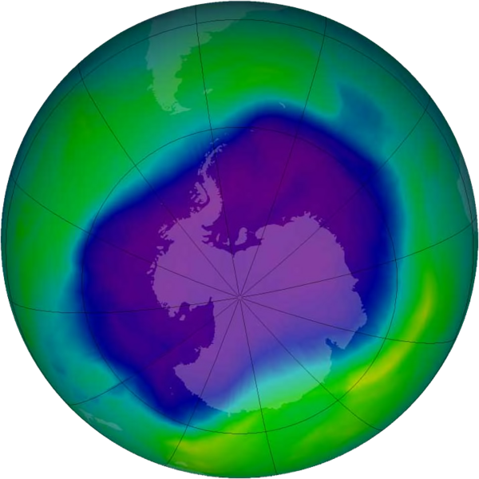
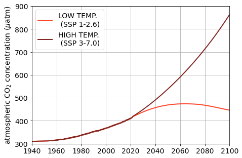
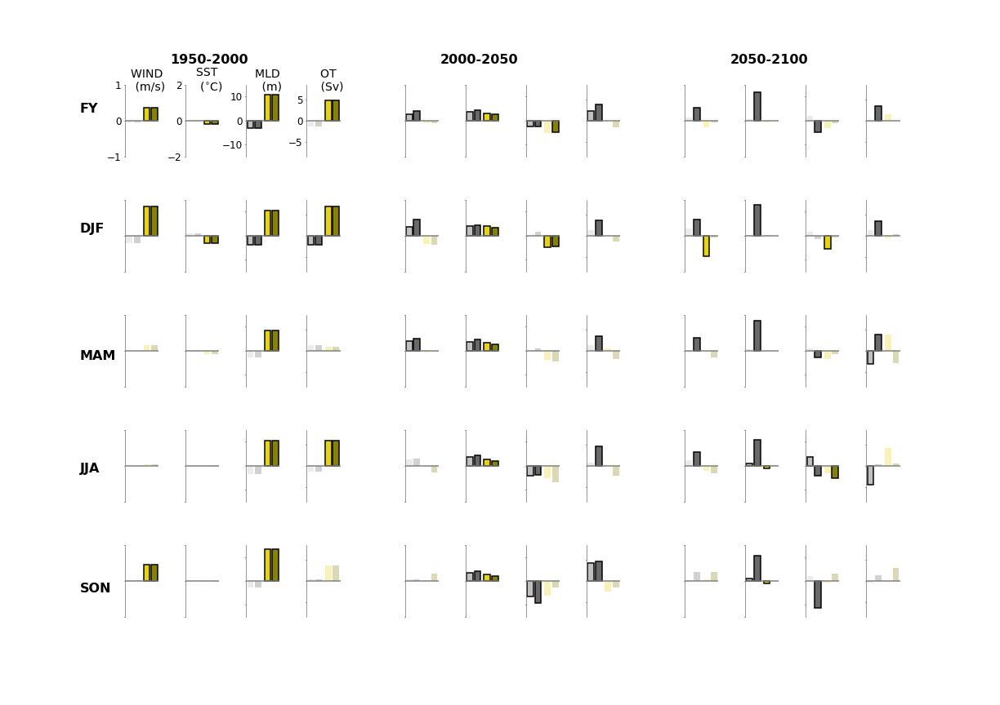

class: center, middle <br/> <br/> .title[The Relative Role of Stratospheric Ozone <br/> and Greenhouse Gasses in Modifying the <br/> Southern Ocean Carbon Sink <br/> from 1950-2100] <!-- .subtitle[] --> .author[Tereza Jarníková$^{1}$, Corinne Le Quéré$^{1}$, Steven Rumbold$^{2}$, Colin Jones$^{3}$] <!-- .author[RoSES Wrap-Up Meeting]<br/> --> .date[Polar Oceans Seminar Series, British Antarctic Survey, UK <br/><br/> February 9, 2024] <br/> <br/> <br/> .note[1- School of Environmental Sciences, University of East Anglia]<br/> .note[2- National Centre For Atmospheric Science, University of Reading]<br/> .note[3- National Centre For Atmospheric Science, University of Leeds] <br/> <br/> <br/><br/> <!-- url of slides for accessibility: <br/><br/> https://tjarnikova.github.io/pres/2022SEP_CHALLENGER.html --> --- name: background class: center <br/> #Guiding Questions <!-- <br/> .note[South Pole O$_3$ concentration, September 2006, NASA] <br/><br/> --> .left-column[ <br/><br/><br/>.note[South Pole O$_3$ concentration, September 2006, NASA]] .right-column[<br/> <br/><br><br> .note[Two future greenhouse gas scenarios, <br/> Meinshausen et al., 2020] ] <br/><br/><br/><br/><br/><br/><br/><br/><br/><br/><br/><br/><br/><br/><br/><br/><br/> .date[1- How are the Southern Ocean wind patterns projected to change over the coming century <br/> under different ozone and SSP scenarios?] .date[2- What are the effects of changing wind patterns on the physical ocean sea state?] .date[3- What are the relative controls on the carbon flux?] <!-- ##xx-todo: extra background --> --- name: background class: center <br/> #Methods .date[Which mechanisms are important for the ocean carbon sink?] <!-- .date[-1- How do ozone and greenhouse gas emissions change Southern Ocean wind structure?]<br/> .date[-2- How do these changes translate to the ocean sea state?]<br/> .date[-3- Which mechanisms are important for the carbon sink?]<br/> --> <br/> <br/><br/> <!-- .date[We evaluate historical UKESM wind fields against the ERA5 reanalysis product] .date[We run the UKESM under six different ozone and greenhouse gas scenarios <br/> and analyze dominant trends in changing wind patterns.] .date[We analyze the physical responses of the UKESM ocean model to these six scenarios, focusing on sea surface temperature, mixed layer depth, and sigma-coordinates overturning.] .date[We separate out the relative effects of ozone and greenhouse gas emissions on these metrics, and consider their impact on the carbon sink.] --> <!-- ##xx-todo: better methods pic --> --- name: background class: center <br/> # Methods <br/> .date[UKESM1, 1950-2100]<br/> <br/> <br/> <img style="width:66%" src="./figs_2022_JUL_CELOS/sspscen.png"> <br/> <br/> .note[Fixed: Ozone depleting substances fixed at 1950 values.]<br/> .note[Historic: Ozone depleting substances evolve realistically through time.]<br/> .note[1990: Ozone depleting substances fixed at 1990 values.]<br/> <br/> .note[Low Temp.: SSP 1-2.6]<br/> .note[High Temp.: SSP 3-7.0] --- name: model class: center ## UKESM1 Wind Evaluation Against ERA5 .date[Does UKESM1 skillfully model historical winds?] Climatological spatial windspeed structure (1950-2020) is similar in UKESM1 and ERA. <br/> UKESM1 has typically stronger winds than ERA5. <!-- ##xx-todo: replace this with fixed maps!!!!without line --> --- name: model class: center ## UKESM1 Wind Evaluation Against ERA5 <!-- .date[Due to stratospheric ozone depletion, summertime winds have intensfied significantly <br/> in the Southern Ocean in the second half of the 20th century. ] --> <img style="width:52%" src="./FIGS_ORGANIZED/2023JUL_CELOS/windhov.png"> <!-- https://adaood01.uea.ac.uk/node/c0126.hpc.private/34418/notebooks/scratch/SOZONE/windAnalyis/paperFigures/regridded_partAfigures.ipynb --> Windspeed increases in UKESM1 are more zonally localized than in the ERA5 reanalysis product. A better match is found south of -50 degrees. --- name: model class: center ## UKESM1 Wind Evaluation Against ERA5 <!-- .date[Due to stratospheric ozone depletion, summertime winds have intensfied significantly <br/> in the Southern Ocean in the second half of the 20th century. ] --> Generally good agreement is found between UKESM1 modelled mean and extreme winds and the ERA5 reanalysis. Both datasets reproduce seasonal variability in observational SAM index trends. --- name: model class: center ## UKESM1 Wind Evaluation Against ERA5 <br/> <br/><br/><br/> The observed poleward trend in maximum wind speed (the polar jet) is generally reproduced in UKESM, and strongest in summer. --- name: background class: center ##Southern Ocean Wind Climatology PDF: 1940-1960 <img style="width:46%" src="./figs_2022_JUL_CELOS/wspd_1940-1960.jpg"><br/> As expected, from 1940-1960 wind magnitudes are almost identical between 6 scenarios. <br/> Winter winds are stronger and somewhat less variable. --- name: background class: center ##Southern Ocean Wind Climatology PDF: Present-Day (2010-2030) <img style="width:46%" src="./figs_2022_JUL_CELOS/wspd_2010-2030.jpg"><br/> Under the historic and 1990 ozone scenarios, much larger summer increases in windspeed <br/> have occurred to date than in the fixed ozone scenario. Winter increases have been more modest in all scenarios. --- name: background class: center ##Southern Ocean Wind Climatology PDF: 2040-2060 <img style="width:46%" src="./figs_2022_JUL_CELOS/wspd_2040-2060.jpg"> <br/> By mid-century, the highest summer windspeed increases occur in the 1990 ozone, high temperature scenario. Temperature-dependent changes in windspeed increases start being visible in summer. --- name: background class: center ##Southern Ocean Wind Climatology PDF: 2080-2100 <img style="width:46%" src="./figs_2022_JUL_CELOS/wspd_2080-2100.jpg"> <br/> Under the historic ozone scenario, temperature is the deciding factor in late-century windspeed evolution: In the high temp. scenario, summer winds continue speeding up, while in the low temp. scenario, they slow down. --- name: background class: center ##Summary of wind speed changes <br/> --- name: background class: center ##Summary of wind speed changes <br/> --- name: background class: center ##Summary of wind speed changes <br/> Ozone forces wind speed changes in summer, while GHG emissions drive changes year-round. <br/> Under the historical ozone scenario, temperature is the deciding factor in late-century wind speed evolution: In the high temperature scenario, summer winds continue speeding up, while in the lower temperature scenario, they slow down. --- name: background class: center ##Summary of Mixed Layer Depth Changes <br/> <!-- cratch/SOZONE/windAnalyis/oceanFields/bargraph-streamlined.ipynb --> --- name: background class: center ##Summary of Mixed Layer Depth Changes <br/> --- name: background class: center ##Summary of Mixed Layer Depth Changes <br/> In summer, mixed layer depth shoaling due to GHG-induced thermal stratification is opposed by deepening due to windspeed increases that are present in ozone-depletion scenarios. --- name: background class: center ##Summary of OT changes <br/> --- name: background class: center ##Summary of OT changes <br/> --- name: background class: center ##Summary of OT changes <br/> Wind speed increases due to ozone depletion and GHG emissions strengthen meridional overturning to the end of the 21st century. The effect is less clear in the winter months. --- name: background class: center ##Summary of SST changes <br/> --- name: background class: center ##Summary of SST changes <img style="width:103%" src="./FIGS_ORGANIZED/paperJPG/Fig-SSTforpres2.jpg"> <br/> --- name: background class: center ##Summary of SST changes <br/> SST strongly bifurcates on warming scenario, <br/> but a small recovery of initial ozone-induced cooling is visible. --- name: background class: center ##50-year trends in physical quantities <br/> Historically, ozone-induced changes dominate changes in physical ocean parameters.<br/> --- name: background class: center ##50-year trends in physical quantities  <br/> Historically, ozone-induced changes dominate changes in physical ocean parameters. <br/> In the future, grenhouse gas emissions dominate, and scenario matters. --- name: background class: center ##Ok, but what does it mean for the carbon? <br/> <br/> <!-- .date[] --> <br/> <br/> <br/> <br/> At first order, atmospheric carbon scenario dominates the carbon sink effect, as expected. --- name: background class: center ##Ok, but what does it mean for the carbon? A back of the envelope calculation - do the physics contribute?<br/> <br/> <br/> .date[SST effect]<br/> <div>$$ df\text{CO}_{2} \approx k_g \cdot 0.04 \cdot p\text{CO}_2 \cdot d\textbf{SST}$$</div> <br/> .date[MLD effect (carbonate chemistry)]<br/> <div>$$ d\text{DIC} \approx d \textbf{MLD} \cdot \frac{d \text{DIC}}{dz} $$</div> <div>$$ dp\text{CO}_2 \approx R \cdot \frac{dp\text{CO}_2}{d\text{DIC}} $$</div> <div>$$ df\text{CO}_{2_{(DIC)}} \approx k_g \cdot dp\text{CO}_2 \quad, \quad df\text{CO}_{2_{(TA)}} = - ( 1/3) \cdot df\text{CO}_{2_{(DIC)}} $$</div> <br/> .date[OT effect (carbonate chemistry)]<br/> <div>$$ d\text{DIC} \approx d \textbf{OT} \cdot d\text{DIC}_{\text{deep-surf}} $$</div> <div>$$\textit{convert to } df\text{CO}_{2_{(DIC)}} \textit{ and } df\text{CO}_{2_{(TA)}} \textit{ as above}$$</div> --- name: background class: center ##Ok, but what does it mean for the carbon? A back of the envelope calculation - do the physics contribute?<br/> <br/> .date[MLD effect (ecosystem carbon sink)]<br/> <div>$$ d\text{Fe} \approx d \textbf{MLD} \cdot \frac{d \text{Fe}}{dz} $$</div> <div>$$ d\text{DIC} \approx \frac{d \mu L}{d\text{Fe}} \cdot d\text{Fe} \cdot \mu L \cdot [diatom] \cdot f $$</div> <div>$$\textit{convert to } df\text{CO}_{2_{(DIC)}} \textit{ as before}$$</div> <br/> .date[OT effect (ecosystem carbon sink)]<br/> <div>$$ d\text{Fe} \approx d \textbf{OT} \cdot d\text{Fe}_{\text{deep-surf}} $$</div> <div>$$ d\text{DIC} \approx \frac{d \mu L}{d\text{Fe}} \cdot d\text{Fe} \cdot \mu L \cdot [diatom] \cdot f $$</div> <div>$$\textit{convert to } df\text{CO}_{2_{(DIC)}} \textit{ as before}$$</div> <!-- \text{MLD effect - ecosystems carbon uptake} \\ <div>$$ \frac{d \text{Fe}}{dt} = d \text{MLD} \cdot \frac{d \text{Fe}}{dz} $$</div> <div>$$ \frac{d \text{DIC}_l}{dt} = - \frac{d \text{MLD}}{d \text{Fe}} \cdot \mu \cdot \text{A}_\text{phyto} \cdot \text{phyto conc} \cdot f $$</div> --> <!-- \text{OT effect - carbonate chemistry} \\ \frac{d \text{DIC}}{dt} = d \text{OT} \cdot \frac{d \text{DIC}_{\text{surf-deep}}}{dt} \text{dpCO}_2 \text{ conversion as in MLD (with Revelle factor)} \\ \frac{d \text{FS}_{\text{CO}_2 \text{PIC}}}{dt}, \frac{d \text{FS}_{\text{CO}_2 \text{in}}}{dt} \text{ as above} \text{OT effect - ecosystems diabase} \\ \frac{d \text{DIC}_l}{dt} = d \text{MU}_\text{Fe} \cdot \Delta \text{Fe}_{\text{surf-deep}} \cdot \mu \cdot \text{A}_\text{phyto} \cdot \text{phyto conc} \cdot \Delta t \cdot f \text{(to } d \text{FS}_{\text{CO}_2 \text{DIC}} \text{ as above)} --> --- name: background class: center ##Ok, but what does it mean for the carbon? A back of the envelope calculation - do the physics contribute? <br/> <br/> <br/> <br/> --- name: background class: center ##Ok, but what does it mean for the carbon? <br/> <br/> In the past, the ozone effect dominates the physical response. In the low carbon future scenario, the effect of ozone recovery remains important, <br/> and a number of physical fields contribute to the sink response. --- name: background class: center ##Ok, but what does it mean for the carbon? <br/> <br/> In the high carbon scenario, the thermal effect is dominant, and important. --- name: background class: center ##Take home messages and future work .left-column[<img style="width:100%" src="./figs_2022_JUL_CELOS/wspd_10yrmean.jpg">] .right-column[<br/>] <br/><br/><br/><br/><br/><br/><br/><br/><br/><br/><br/><br/><br/><br/> - Strong ozone and GHG-related summertime windspeed and temperature increases <br/> lead to clear effects on the physical oceanography of the Southern Ocean. - Under ozone recovery and a low carbon scenario, <br/> a reversal of summertime wind speed increases is possible. - The controls on the carbon sink are shifting: <br/> ozone-induced changes drivers in were important historically, <br/> but GHG scenario dominates in the future, especially at higher atmospheric CO$_2$ levels. - Stay tuned! Our group is exploring the effect of varying ecosystem composition <br/> on export and carbon cycling, using a similar framework.